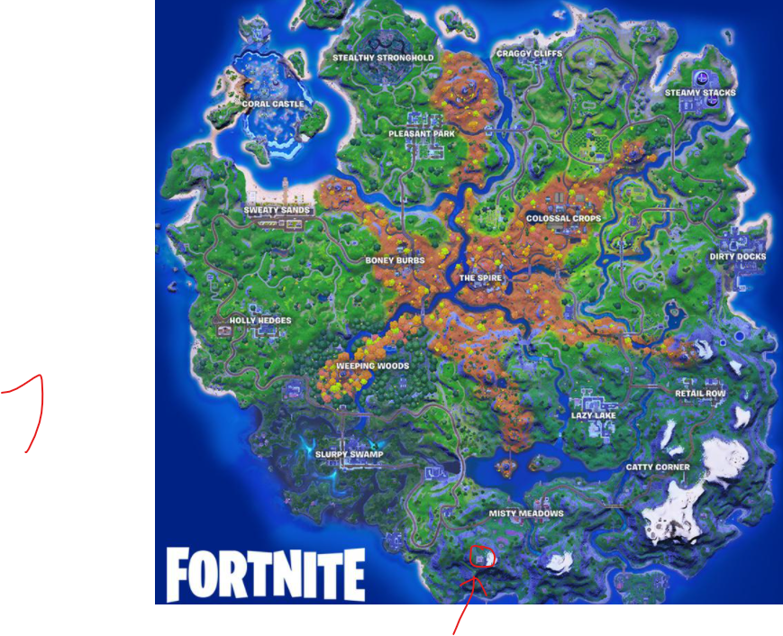
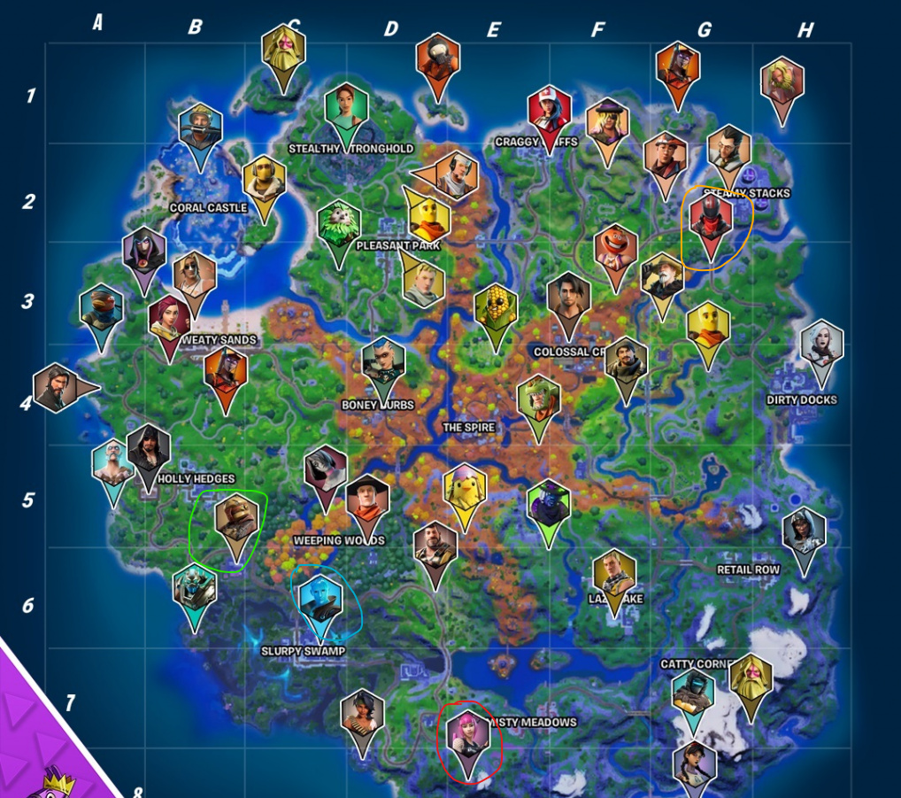

The Fortnite season 6 has the tools like crafting that can help to build primal and mechanical weapons
The "Makeshift" weapons spawn most of the times and mechanical weapons spawn really rarely as floor loot
There are also new kind of chests called as bunker chests
The provide weapons like RPG, P90's and SPAS'S
They do not have confirmed spawn rate and spawn most of the times
Spawn locations
There are Multiple Spire locations across the map and the main one is The spire location
Out of all, only the spire assasin one is marked and is located in the center of the Map
And the rest spire locations
All the unmarked spire's give an epic primal Assault Rifle and the main spire assasin used to give the mythic primal shotgun
This is what the spire assasin used to give
But now The Spire assasin gives the mythic recycler
Mythic recycler
The Guardians give there crown that gives a special jump affect that comes when you eat the hop flopper
You can get the mytgic jumpboots by taking the crown to The "Spire location" and get the mythic jumpboots
To see video, click on this button
But dont click it just yet, click it when you saw the entire page
Now about the crafting mechanism
You need animal bones to make primal weapons and mechanical parts to make mechanical weapons
You need 5 mechanical parts to convert to a mechanical weapon for a normal AR
Here are all the bows you can make
Here are all the primal bows
Mechanical bows
You can get mechanical parts by breaking cars and mechanical boxes and bones from hunting animals and pickaxing animal bones
The car mods update has come and now you can make any vehical to off-road
You can make multiple more cars that you can mod to off-road by the off-road wheels
And sometime spawn as floor loot
Apart from whiplash you can add to all other vehicles like
There are also multiple NPC'S across the map
Sometimes if you go and talk with them, you get free meds, minis and macs and sometimes even a gold pump!
You can duel few off them and get epic weapons like if you duel gutbomb in logjam woodworks you get an epic SPAS and if you challenge jonesy the first in Pleasant park,
you get a purple primal rifle
All NPC locations
There also bosses that spawn loot
If you wanna go and subscribe to my channel, Click on the button down
Now coming to the exotics, The new grappler bow is supossed to come soon and will be an exotic with Lara Croft NPC at stealthy stronghold where the predator was there
The Shadow Tracker suprressed pistol is there with The NPC at the Disco near misty meadows

Now the other exotics like the Dub, Night hawk, Storm scout, Boom sniper, Hop rock dualies and the slurp bazooka were present.
But now only the Dub, Hop rock dualies, Shadow tracker and The Slurp bazooka are present.
Locations
Blue-Slurp bazooka
Red-Shadow tracker
Green-Hop rock dualies
Orange-The Dub

Hop rock dualies with gutbomb in logjam woodworks
Shadow tracker with powerchord
The dub with the racer near steamy
and the slurp bazooka with slurp jonesy
Note to amma
Amma could I please play some fortnite for only 30 mins or + because i can't go out to play because of my RB battles and COVID